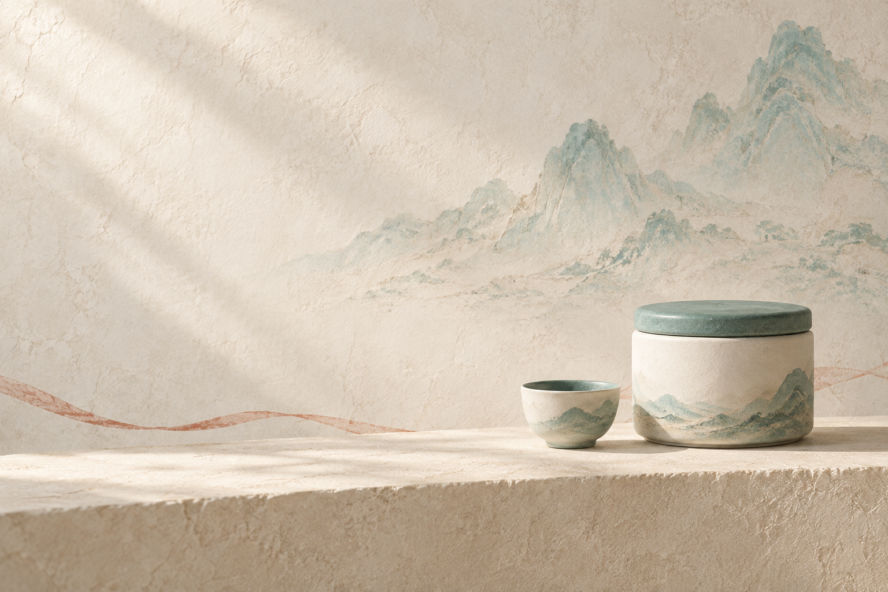
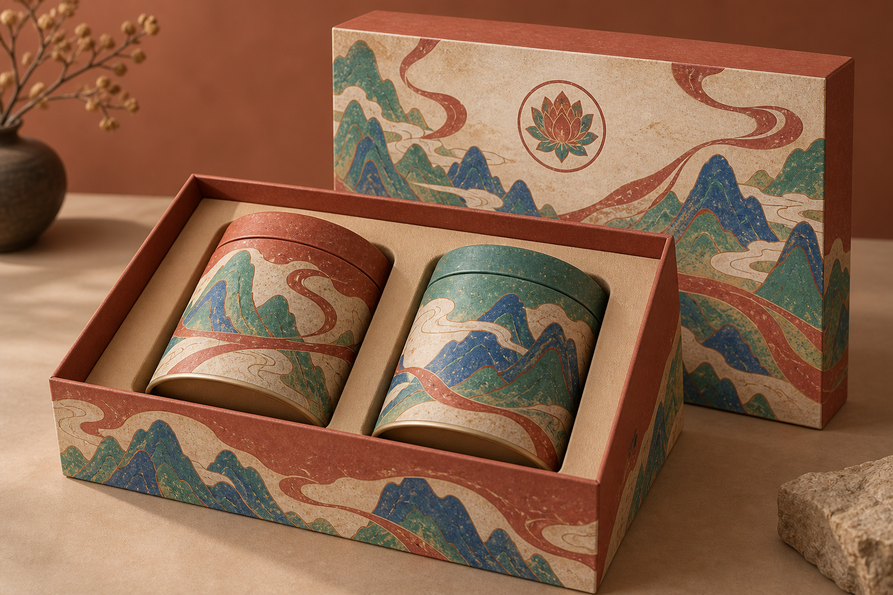
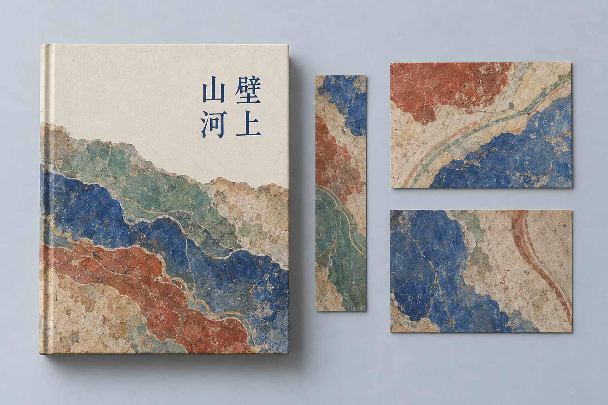

A / 优先验证
品牌活动物料助手
一个真实单品、一份活动文案，产出一套符合品牌要求的横幅、竖图与方图。

- 谁来用
- 小品牌运营、电商运营、设计服务团队。
- 最小功能
- 产品与品牌资料、一个风格包、三种明确尺寸、准确文案、导出和人工验收。
- 库能提供什么
- 配色与构图规则、文字政策、修图保留项。
- 我们需要补什么
- 真实商品素材处理、模型接入、图片文字分层、精确尺寸、版本归档。
从视觉探索，到真实交付
这个库可以提供一个风格模块和制作流程。我们还要补齐真实商品、准确排版、尺寸控制、审核与复用，才能完成用户的工作。
研究已归档，暂不继续扩展。以下保留为备选方向：物料助手有本机合成原型，其余仍为方案，付费需求均未验证。
上传自己的商品图，修改文案，预览并导出三种准确尺寸的 PNG。使用固定背景模板；尚未接入 AI 生图、品牌标识和项目保存。
A / 优先验证
一个真实单品、一份活动文案，产出一套符合品牌要求的横幅、竖图与方图。

B / 适合先做内部工具
把模糊需求转为差异明确的几个方案，让客户先选方向，再进入正式设计。

C / 有持续团队需求后再做
把批准的颜色、字体、商品和模板保存下来，让多人制作时保持一致，并支持审核。

图片来自本研究此前生成的概念样图，用于说明应用方向，不能证明三个产品已实现或获得客户认可。
一个具体的工作任务
用户真正需要的是正确的商品、准确的活动信息、可用的尺寸，以及以后还能复用的品牌风格。
敦煌风只是一种可选风格。商品、文案和交付要求，应当成为产品流程的中心。
本次实验教会了我们什么
| 实际观察 | 经验 | 产品里应补的环节 |
|---|---|---|
| 要求2560 × 1024，实际1983 × 793 | 提示词不能保证精确尺寸 | 明确画布、布局与导出尺寸 |
| 标题正确，字体没有完全遵循要求 | 模型文字不等于稳定排版 | 关键文字和标识独立排版 |
| 去掉飘带，部分背景也被重绘 | 修改可能影响已接受内容 | 保存版本、比对关键区域、允许回退 |
| 包装与空间图看起来完整 | 外观提案与生产文件有距离 | 明确交付类型和后续专业工作 |
| 不同扩展需要覆盖原来的默认规则 | 场景扩展需要重新定义要求 | 可替换的风格配置与明确限制 |
| 关键词检查通过，数量和留白仍可能偏离 | 输入合格不等于输出合格 | 图像验收、失败记录与人工审核 |
下一步，不以生成数量衡量价值
选择一个实际单品，用相同资料分别走现有流程与拟议流程。记录准备时间、返工时间、修改次数、错字、商品变形、裁切问题和调用成本，再由实际使用者判断能否采用。
如果稳定减少返工并有人愿意持续使用，再扩充模板与素材管理；如果每次仍需专业人员大幅修改，就定位为设计师的辅助工具。若需求偶发，保留为内部 Skill 即可。
当前判断：技术创新较低，流程经验值得复用，独立商业价值尚未验证。最有价值的下一步是验证交付，不是继续堆积画风。
已有工具与我们的空间
Adobe Express 已有品牌资料和模板风格限制。我们若继续，应围绕具体行业的商品素材、批准方案、交付标准和实际返工流程建立价值，而非只增加一个敦煌主题。
Adobe Brand Kit · 模板风格限制。这些来源说明功能已有公开产品提供，不作为市场规模或收益证据。